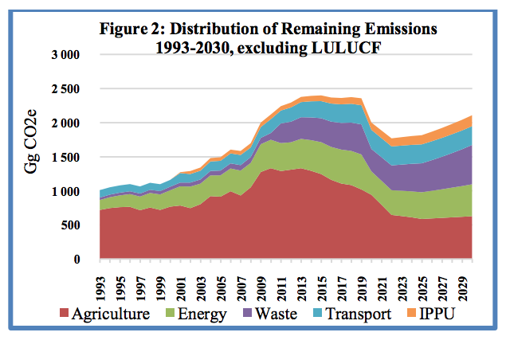
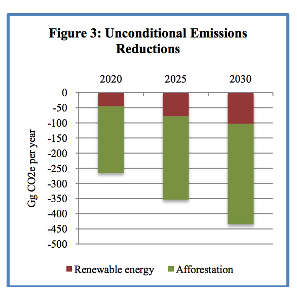
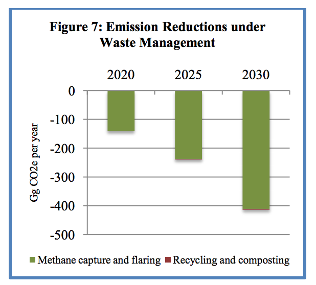

Figure 2: Distribution of Remaining Emissions 1993-2030, excluding LULUCF
Department of Water Resources, Ministry of Environment, Climate Change, Forestry, Water and Wildlife, 7, Marina Parade Banjul, The Gambia
The Republic of The Gambia is fully committed to the multilateral process under the UNFCCC and will continue to work with all Parties to negotiate and adopt a New Climate Agreement in Paris in December 2015 that will be in line with keeping global warming below 2°C to 1.5°C.
Following the decision at COP 19 in Warsaw to invite all UNFCCC parties to develop their Intended Nationally Determined Contributions (INDCs), The Gambia expressed a strong interest in receiving technical support to develop their INDCs and received financial and technical support from the German Government development agency GIZ and the Climate and Development Knowledge Network (CDKN). GIZ and CDKN contracted Climate Analytics to provide technical assistance to the INDC Team of The Gambia.
On behalf of the President of The Republic of The Gambia, Alhagi Yahya A. J. J. Jammeh and on my own behalf, I thank the Government of Germany, the CDKN, GIZ and Climate Analytics of Germany for the financial and technical support.
The collaborative efforts between the Climate Analytics Team and the National INDC Team are commendable and have been found to be mutually beneficial.
Finally, I must thank Mr. Petes Betts of the UK Delegation to the Climate Change Negotiations for all his involvement and efforts in catalyzing the support.
The Republic of The Gambia has the honour and pleasure to communicate its intended nationally determined contribution (INDC) as part of the implementation of decisions 1/CP.19 and 1/CP.20 of the Conference of Parties of the UNFCCC.
Capacity to conduct and submit an economy-wide emissions reduction targets for The Gambia is limited. Individual baselines for each sector were developed, using a range of GDP growth scenarios. The medium scenario assumes growth rates of 5.5% until 2016 and 4.5% from 2017. For population projections the UN population prospectus 2012 medium fertility scenario was used. Individual assumptions were made for the mitigation options/activities in different sectors
Treatment of the Land Use Land Use-Change and Forestry (LULUCF) emissions category has not been considered in the INDC. Excluding LULUCF and for Low Emissions Scenario, overall emissions will be reduced by about 44.4% in 2025 and 45.4% in 2030.
| INTENDED NATIONALLY DETERMINED CONTRIBUTION | ||||||||||||||||||||||||||||||||||||||||||||||||||||||||||||||||||||||||||||||||||||||||
|---|---|---|---|---|---|---|---|---|---|---|---|---|---|---|---|---|---|---|---|---|---|---|---|---|---|---|---|---|---|---|---|---|---|---|---|---|---|---|---|---|---|---|---|---|---|---|---|---|---|---|---|---|---|---|---|---|---|---|---|---|---|---|---|---|---|---|---|---|---|---|---|---|---|---|---|---|---|---|---|---|---|---|---|---|---|---|---|---|
| 1.1: Commitment Period | 2021 to 2025 | |||||||||||||||||||||||||||||||||||||||||||||||||||||||||||||||||||||||||||||||||||||||
| 1.2: Commitment Type | Activity/Sector Based | |||||||||||||||||||||||||||||||||||||||||||||||||||||||||||||||||||||||||||||||||||||||
| 1.3: Base Year | 2010 | |||||||||||||||||||||||||||||||||||||||||||||||||||||||||||||||||||||||||||||||||||||||
| 1.4: Emissions reduction targets |
|
|||||||||||||||||||||||||||||||||||||||||||||||||||||||||||||||||||||||||||||||||||||||
1.5: Scope and Coverage |
|
|||||||||||||||||||||||||||||||||||||||||||||||||||||||||||||||||||||||||||||||||||||||
| 1.6: Assumptions | This INDC was prepared using 100 year Global Warming Potentials (GWPs) from the IPCC 4th assessment report, the IPCC 2006 greenhouse gas inventory methodologies, and the 2013 IPCC KP Supplement. | |||||||||||||||||||||||||||||||||||||||||||||||||||||||||||||||||||||||||||||||||||||||
| 1.7: Use of market mechanism | Gambia has so far not benefited from the international market mechanisms under the Kyoto Protocol. The Gambia does not plan to achieve any of its commitment by buying certificates from any potential new market mechanisms. The Gambia would be a host country of projects from any international climate mechanism aiming at securing the protection of the planet by meeting standards that deliver real, permanent, additional and verified mitigation outcomes, avoid double counting of emissions. Elements of the INDC that are conditional to international support could potentially include projects that are registered under the new market mechanism established under the Convention. Furthermore, The Gambia supports the continuation of the CDM established under the Kyoto Protocol and its continuation under the new agreement. | |||||||||||||||||||||||||||||||||||||||||||||||||||||||||||||||||||||||||||||||||||||||
| 1.8: Fairness and Ambition | According to preliminary inventory data for 2010 under the Third National Communication (being developed), the Gambia represented below 0.01% of the global emission and as such its contribution to climate change has always been marginal. At first sight it seems rather unfair to ask a country like The Gambia to contribute to the global emission reduction efforts, which implies that resources to be allocated to poverty reduction and development priorities will be arbitrated to take into account the requirements of the implementation of the Paris Agreement. The Gambia has always shown a progressive standpoint and commendable leadership in the climate change negotiations, as the implications of the current level of mitigation ambition is particularly low and likely to pose tremendous challenges for countries like Gambia. Agriculture, Energy, Water Resources, which are vital sectors for the Gambian economy will severely suffer if global and deep cut do not occur in a near future. For this reason, The Gambia took the leadership and joined the call in 2011 for a universal mobilization of efforts to tackle climate change allowing that global actions protect the future of the most vulnerable countries. By presenting this INDC, the Gambia would like to provide a moral voice for all responsible and capable countries to undertake actions that are proportionate for their responsibilities and capabilities not only for themselves, but for the whole global community. The Gambia is an LDC and according to the Lima Call for Action, it is not mandatory for LDCs to have quantified or quantifiable targets. But this INDC has quantified and quantifiable commitment which go beyond the fair share of The Gambia. Fairness in the context of the most vulnerable countries INDC also relates to the way the Paris Agreement will deal with their adaptation needs in a post 2020 world. | |||||||||||||||||||||||||||||||||||||||||||||||||||||||||||||||||||||||||||||||||||||||
| 1.9: Finance | Financial support from all sources will be needed for the implementation of this INDC. An assessment of the implementation options is needed between 2016 and 2018. Potential sources will include, the National Budget and proposed National Climate Fund, the financial mechanism of the Convention, bilateral and multilateral sources, other non-Convention financial and investments sources, as well as international and domestic private finance sources. All these will be facilitated and enabled by current and proposed public policy and regulatory frameworks as indicated in the section 5, as well national mobilization of finance and investments where possible. | |||||||||||||||||||||||||||||||||||||||||||||||||||||||||||||||||||||||||||||||||||||||
| 1.10: Implementation | The Government of The Gambia has in place legislative and policy instruments to address climate change and some of these instruments have been used in the development of this INDC and will be used for its implementation (see Section 5). | |||||||||||||||||||||||||||||||||||||||||||||||||||||||||||||||||||||||||||||||||||||||
The Gambia signed the United Nations Framework Convention on Climate Change (UNFCCC) in 1992 and ratified it in 1994. By so doing, The Gambia is implementing the Climate Change Convention and its Kyoto Protocol based on its national circumstances, particularly to support its development policies and programmes. Since its ratification of the Convention, The Gambia has taken very important steps to face the challenges and address the effects of climate change through the development, submission and implementation of her National Communications, the National Adaptation Program of Actions (NAPA), the National Capacity Self Assessment (NCSA) and the Nationally Appropriate Mitigation Actions (NAMA). These documents have been developed to be in line with the national policies and programmes including VISION 2020, the PAGE and relevant sectorial policies, some of which are discussed in Section 5.
As one of the Least Developed Countries (LDCs) parties to the UNFCCC, The Gambia is among the nations that are the least responsible for climate change, particularly vulnerable to its impacts, but the most progressive for ambitious international climate action. As such, The Gambia has been calling for all countries to lead by example, making no exception for the development of its INDC. It has often highlighted the opportunities arising out of the process, allowing countries to leapfrog the „dirty development‟ phase, combining enhanced development and growth with an environmentally sustainable path.
Following the decision at COP20 in Warsaw to invite all UNFCCC parties to develop their Intended Nationally Determined Contributions (INDCs), The Gambia expressed a strong interest in receiving technical support to develop their INDCs and received financial and technical support from the Governments of Germany and the United Kingdom. The German Government development agency, GIZ, and the Climate and Development Knowledge Network (CDKN) provided technical and financial support. GIZ and CDKN contracted Climate Analytics to provide technical assistance to the INDC Team of The Gambia.
This technical report is the result of the technical support provided towards The Gambia‟s INDCdevelopment process. The results from this analysis feed into the political process in The Gambia, which ultimately decided on the INDC. The process leading to this technical report and providing additional input towards the political process includes the technical work carried out by the consultants, and a national stakeholder engagement process. To this end, The Gambia carried out national stakeholder consultations on INDC-development in the form of workshops.
Technical inception workshop at the senior technical expert level informed experts on the context and planning of the project and the purpose of the activities; and provided input for the technical analysis regarding challenges and current status in the different sectors. The workshop was attended by 80 experts from ministries, departments, NGOs and the private sector.
Local level sensitization workshops were held at the country‟s eight local government areas (districts) and stakeholders acquired knowledge on the issues related to climate change, the UNFCCC process and the significance of the INDC; providing input on appropriate mitigation options. About 120 participants in each district and from all local stakeholder groups participated.
Technical training workshop at the senior technical expert level was held to familiarize sector experts in The Gambia with the calculation methods and tools used for the INDC development and to discuss the robustness of assumptions made for calculations and adjust these where needed. The workshop was attended by 25 participants from key ministries, agencies and institutes for the different sectors.
The Climate Analytics Consultants and the National INDC Team collaborated in the technical analysis leading to the development of the INDC. The technical analysis only forms one input into the process of developing the INDC. Although national priorities, development aspirations and technical feasibility were part of the analysis, other considerations influenced priorities and level of ambition. The Technical Analysis Report provides a brief description of the status of activities in The Gambia; a short discussion of the GHG profile of the country and critical sectors; the methodological approach taken for baseline development and mitigation analysis; the results obtained from the analysis per sector and at the national level; and two possible approaches for the formulation of the INDC as an input to the political process. This document guided the formulation of this INDC.
Individual baselines for each sector were developed, using a range of GDP growth scenarios. The medium scenario assumes growth rates of 5.5% until 2016 and 4.5% from 2017. For population projections the UN population prospectus 2012 medium fertility scenario was used. Individual assumptions were made for the mitigation options/activities in different sectors
Treatment of the Land Use Land Use-Change and Forestry (LULUCF) emissions category has not been considered in the INDC. Excluding LULUCF and for Low Emissions Scenario, emissions will be reduced by about 44.4% in 2025 and 45.4% in 2030 (see Figures 1 and 2 below).
|
 |
| Figure 1: Baseline Emissions and Mitigation Effects 1993 – 2030, excluding LULUCF | Figure 2: Distribution of Remaining Emissions 1993-2030, excluding LULUCF |
The Republic of The Gambia includes two unconditional mitigation options in its INDC: Firstly, the use of renewable energy sources in lighting, communication and health facilities, and for lifting water from wells and boreholes. Secondly, the Department of Forestry and local communities will continue to plant and care for trees annually. The implementation of renewable energy sources will contribute to greenhouse gas emission reductions of 45.6 GgCO2e in 2020, 78.5 GgCO2e in 2025 and 104 GgCO2e in 2030 whilst afforestation will contribute reductions of 220.3 GgCO2e in 2020, 275.4 GgCO2e in 2025 and 330.5 GgCO2e in 2030 (see Figure 3 to the right).

Under the Agriculture sector, two conditional mitigation options (NERICA Rice production and Rice efficiency) have been assessed and reported on in this INDC (see Figure 4 to the right). For production of NERICA upland production in place of Swamp Rice, estimated emission reductions are 124.1 GgCO2e in 2020, 397.7 GgCO2e in 2025 and 2030. For the promotion of efficiency in rice production, estimated emission reductions are 437.8 GgCO2e in 2020, 707.0 GgCO2e in 2025 and 2030.

The energy supply mix mainly consists of traditional biomass and petroleum products, with biomass accounting for the vast majority. Petroleum products play an important role in the country‟s energy supply since it is the main source of fuel for transport and electricity generation, notwithstanding its negative environment consequences. In 2010, Total Energy Supply (TES) in The Gambia was 407,926 tons of oil equivalents (toe) according to UNIDO figures. As shown in Figure below, five conditional mitigation options have been identified and analyzed under the Energy Sector. Combined emissions reductions are 425.7 GgCO2e in 2020, 541.1 GgCO2e in 2025 and 629.6 GgCO2e in 2030. Figure 5 and Table 1 to the right show the emission reductions per mitigation option.

| Table 1: Emission Reductions per Mitigation Option in the Energy Sector | |||
|---|---|---|---|
| Mitigation Options | Projection (GgCO2e) | ||
| 2020 | 2025 | 2030 | |
| Reduced transmission losses | 46.0 | 69.6 | 98.7 |
| Efficient lightning | 23.1 | 42.9 | 41.7 |
| Solar water heating | 3.0 | 19.3 | 36.4 |
| Renewable energy + energy efficiency | 56.4 | 121.7 | 174.4 |
| Efficient Cook-stoves | 297.2 | 287.6 | 278.4 |
Of the total CO2 (437.575 Gg) emitted from the Energy Sector in 2010 the Transport subsector accounted for 46% (MoE/TNC, 2015). Only one conditional mitigation option was analyzed under the Transport Sector. As shown in Figure 6, deployment of energy efficient vehicles will produce greenhouse gas emission reductions of 40.8 GgCO2e in 2020, 114.5 GgCO2e in 2025 and 193.3 GgCO2e in 2030.

Inadequate waste data is a major issue, regarding both GHG emissions and waste production, for both solid waste and wastewater. Current municipal solid waste generation in The Gambia amounts to approximately 438 tons/day and is expected to reach 1,295 tons/day in 2025 (World Bank 2012). Waste management is a major concern for Gambian Authorities, given that roughly 90% of waste is currently disposed in open dumps (e.g. Bakoteh Dump Site). This leads to severe environmental consequences (Sanneh et al. 2011), which can be exacerbated by the expected growth in waste generation volume in the future. Enhancement of the waste collection system is hindered by lack of vehicles. Specialized vehicles are too expensive to buy and maintain for the municipalities who are responsible for waste management. Over 40% of the population lives in the Greater
Banjul Area (GBA). As such, the Government included in its NAMA agreed list the implementation of an Integrated Management initiative for solid and liquid waste in the GBA, which is expected to reduce emissions significantly but is also associated with an estimated implementation cost of USD 68 million.
Under waste management, combined greenhouse gas emission reductions of 141 GgCO2e in 2020, 239.7 GgCO2e in 2025, and 413.7 GgCO2e in 2030 will be achieved through conditional methane capture, and waste recycling and composting. Figure 6 shows the emission reductions per mitigation option.

As for all least developed countries in sub Saharan Africa, adaptation constitutes a top priority for the Gambia. However, the Gambia does not see the INDC, as the vehicle to address its adaptation needs in the post 2020 context, which needs careful consideration and assessment. Such assessment will be made in the context of the Gambian NAP process. All necessary efforts will be made to engage the country in the formulation and implementation of a comprehensive transformational adaptation investment plan to protect the country‟s high vulnerability against climate change. The Gambia expects that the Paris Agreement will make adequate provision to enable international climate finance support for effective adaptation in the most vulnerable countries.
In the short-term, for The Gambia to transition to a low-emissions and climate resilient development pathway, Government intends to adopt specific enabling conditions which must consist of national regulations, policies, subsidies and incentives, as well as international market and legal infrastructure, trade and technical cooperation. This will be achieved through intensive and extensive education, awareness raising and development and implementation of socioeconomic research as it relates to climate change. Currently, enabling conditions are heavily weighted towards, and encourage, the prevailing brown economy, which depends excessively on fossil fuels, resource depletion and environmental degradation.
In the medium- and long-term, the Government must continue the mainstreaming of climate change into national development frameworks as achieved for the medium-term strategy – the Programme for Accelerated Growth and Employment (PAGE) and some sectorial policies and strategies (the Agriculture and Natural Resources Policy, the Forest Policy and the Fisheries Strategic Action Plan) by adjusting all national and sectorial policies to take climate change into consideration. With appropriate changes in the policies, including fiscal policy, the fostering of public investments to green key sectors (agriculture, energy, water resources, waste management, etc.); employment of new market-based instruments; greening public procurement; improving environmental rules and regulations, as well as their enforcement; improving trade and aid flows; and fostering greater international cooperation can be easily achieved.
Specific examples of short-term and medium-term activities that The Gambia plans to include in her proposed Low Emissions Climate Resilient Development Strategy (LECRDS) and National Climate Change Action Plan (NCCAP) to implement the LECRDS include but not limited to:
Improve the Climate and Climate Change Resilient urban and peri-urban infrastructure of the Gambia including (a) water supply infrastructure in Greater Banjul Area; (b) addressing infrastructural deficiencies of Sanitation services in Kanifing Municipality and Brikama Area Council; (c) developing and applying infrastructure construction and management codes/guidelines under climate change; (d) strengthening climate robustness of public and commercial sector buildings in Greater Banjul Area; and (e) improved road infrastructure and drainage systems. The implementation of this activity will lead to (a) increased access to potable water, integrated water management policy, greater water security for communities, increased protection of infrastructure from extreme climate events; (b) decreased impact of drought on domestic and agricultural water availability; (c) decreased waterborne diseases due to flooding and more sustainable and climate resilient settlements; (d) development and applications of planning codes/guidelines that are climate change oriented (e) strengthened vulnerable infrastructure in GBA; (f) improved resilience of road networks under changing climate; and (g) reduced effect of floods on the Greater Banjul Area (GBA).
Adapting the Agriculture System to Climate Change in The Gambia will strengthen diversified and sustainable livelihood strategies for reducing the impacts of climate variability and change in agriculture and livestock sectors of The Gambia. In additon to institutional strengthening, climate change adaptation priorities will be mainstreamed into national agriculture and livestock policies, plans and programmes; value addition of products will be promoted to complement and support crop diversification; vulnerability and risk assessment tools and agro-climatic monitoring and early warning for food security will be improved; climate information services to the agriculture sector and dissemination to wider rural communities will be promoted; livelihoods and sources of income for vulnerable communities in 5 Administrative Regions of the country will be diversified; sustainable crop intensification will be enabled by introducing innovative crop improvement and management practices; implementation of poultry, small-ruminantes and cattle production at the local level will be improved; and sustainable livelihoods and soil and water management interventions to improve vegetative cover and to sustain livelihoods of livestock dependent communities will be expanded and intensified.
The mainstreaming of climate change in all national development frameworks will be continued. With financial and technical support from the CDKN, climate change issues and risks have successfully been integrated in the Programme for Accelerated Growth and Employment (PAGE: 2012 - 2015) as a crosscutting theme. Some activities identified and included in the Climate Change Priority Action Plan (CCPAP) to implement the PAGE are being implemented and are thus enabling mainstreaming of climate change into the national development process. Development of the follow-up medium-term strategy has started and the following activities will be carried forward.
Mainstreaming of Climate Change into Education Curricula: Education, training and public awareness constitute the first pillar of mainstreaming. The Government enjoyed several achievements in education and the country is on track to achieve the education MDG target for net enrolment in primary education and literacy rate among the population aged 15-24 years. However, the issue of knowledge and education on climate change remains a challenge. Therefore, the Government will continue prioritizing basic/primary education, while expanding access to secondary, higher and tertiary education with emphasis on climate change. Integration of climate change in all education curricula will support the achievement of sustainable development in The Gambia.
Integration of Climate Change into Sectorial Policies: With the understanding that integration is the first step to mainstreaming climate change in national development processes, Government initiated and has completed the integration of climate change into the Agriculture and Natural Resources Policy, the Forest Policy, and the Fisheries Strategy and Action Plan. The integration of climate change in all policies, strategies, plans and programmes/projects will be necessary for mainstreaming climate change. Of particular importance is the integration of climate change into the public budgeting system under the Ministry of Finance and Economic Planning. Taking climate change fully into consideration in the national budgeting system allows climate proofing of all activities and programmes and thus determines allocation of funds to those activities and programmes that are less contaminative.
The planning, development and implementation of an effective disaster preparedness and response strategy in support of climate change adaptation and loss and damage is a critical activity to develop and implement. Critical gaps and constraints exist in terms of human capacity, low awareness of the economic benefits of disaster risk reduction, low resilience of infrastructure and facilities, inadequate slum upgrade, lack of appropriate building codes and land use planning, and inadequate funding to enable the utilization of disaster preparedness and risk reduction in support of climate change adaptation and future loss and damage. To reduce the risk and vulnerabilities of the country and communities, the proposed activity will:
Integrate disaster risk reduction with climate change adaptation;
Strengthen disaster risk reduction institutions through institutional strengthening and capacity building;
Strengthen disaster risk reduction at the local level;
Improve and reinforce proper building codes and land use planning;
Integrate disaster risk reduction into the formal and informal education system and health sector;
Harmonize and re-align partner interventions towards disaster risk reduction;
Strengthen the climate change early warning systems; and
Empower young people as advocates for disaster risk reduction.
Build and strengthen national capacities to promote and facilitate medium and longterm climate change adaptation planning and implementation. The proposed activity will support national systems to integrate climate and development and to plan effectively and allocate finance, as well as identify appropriate sources of finance and policy mechanisms. The activity will build and strengthen institutional and technical capacities and knowledge brokering for climate change adaptation planning and the integration of adaptation within, or aligned with, current development planning and budgeting processes. The process will
Identify information and capacity gaps;
Forge linkages with other on-going initiatives;
Make tools and approaches available to national partners; and
Share lessons learned and knowledge.
Climate-proofing of the Urban and peri-urban infrastructure in the Brikama and Greater Banjul Areas to be implemented in phases and divided into:
Component 1: Water supply, Sanitation and Waste Management;
Component 2: Public works infrastructure (roads, bridges, communication, etc.) in Brikama and Greater Banjul Areas;
Component 3: Climate Resilience of Public and Commercial Buildings in Brikama and Greater Banjul Area;
Enhancing Resilience of coastal and estuarine/riverine economies and livelihoods of the districts in the coastal zone by reducing their vulnerability to sea-level rise and associated impacts of climate change of Gambia‟s most important coastal economic development assets, notably the tourism infrastructures of the Kololi coastline and the lowland rice growing landscapes of the districts of Jokadu and Upper Baddibu.
Climate Change Adaptation through large scale ecosystem restoration of the River Gambia Watershed by:
Improving disaster preparedness and decrease the effect of disasters at seven hotspots identified under the 2012 study by the National Disaster Management Agency;
Promoting access to community markets by improving climate resilience of infrastructure and transport through the rehabilitation and development of critical road and transport infrastructure;
Establishing food processing and preservation plants close to communities and markets;
Improving long term planning and management through development of national and sub-national land use policies and plans for crop and livestock production; management of agro–pastoral infrastructure and control of transhumances; enrichment and management of rangelands and appropriate farm mechanization and establishing irrigation schemes.
Development and Implementation of the National Climate Policy and Strategy of The Gambia
The overall objective is to contribute to the capability of the government and people of The Gambia to mainstream climate change into development planning. The outcomes include (a) an established national climate change policy; (b) rationalised institutional arrangements and inter-sector coordination mechanisms for climate change; and (c) strengthened decision makers' climate change response capacity. On-going activities include definition of guiding principles and roadmap to develop an overarching policy document; definition of a national climate change policy and Low emissions climate resilient development strategy (LECRDS); institutional analysis, and development of recommendations for institutional arrangements; establishment of climate change related inter-institutional coordination mechanisms; and sensitisation and training on the relationship between climate change and development.
Establishment of the National Climate Change Fund of The Gambia.
The development of the Policy and LECRDS of The Gambia has taken into consideration the financial requirements to implement the on-going and proposed activities in the implementation of the Convention, its Kyoto Protocol and the future Climate Region from 2021. The Government of The Gambia, as a matter of priority, intends to create a Gambia Climate Change Fund (GCCF) by:
Conducting detailed analysis of current and future activities and programmes of the LECRDS and the full cost of its implementation;
Designing the GCCF based on the detailed analysis above;
Establishing a multi-stakeholder Task Force to steer the process of establishing the GCCF;
Conducting nationwide stakeholder consultation and sensitization about the Green Climate Fund (GCF), its mandate, and the target date for the launch of operations;
Developing and adopting key policies, guidelines, procedures and templates for the management of the Fund;
Establishing the institutional structures to management the Fund;
Convening a climate finance pledging conference that will include public and private sectors, bilateral and multilateral development partners and investment partners;
Prioritizing climate funding within the national budget and harmonising funding requirements, and efforts to improve the capacity of the funds;
Creating climate change line items and codes in the IFMIS and national budget to allow climate change budgets to be tracked and reported;
Improving the capacities of stakeholders to absorb climate finance;
Standardizing the financial requirements and fiscal calendars of the government and development partners and establishing the processes by which development agency and government resources are provided to the Fund through a joint financing agreement;
Institutionalizing strong financial management capabilities to improve project proposal preparation, disbursement and project implementation and compliance with accounting and reporting requirements;
Encourage public-private-partnership and the active participation of the Gambia Chamber of Commerce in climate finance so as to have access to the Private Sector Facility of the GCF;
Enhancing the capacity of the Budget Directorate of the Ministry of Finance and Economic Affairs, which is serving as the DNA of the GCF in The Gambia; and
Establishing a regular platform for continued engagement and dialogue between the Government of The Gambia and both domestic and international representatives of the private sector on matters relating to the LECRDS.
During the development of this INDC an economic assessment was conducted. The national climate change reports (NCSA, NOTCOMs, NAPA, NAMAs, etc) also contain some costs identified for implementation of identified activities.
Based on the economic assessment under this INDC, investments in renewable technologies (wind and solar) are highly beneficial for The Gambia. The upfront cost of renewables is identified as major challenge for the Gambia, due to inadequate financial resources. However, under a real discount rate of 10% per year, renewables emerge as the most profitable option, with an associated negative carbon price, ranging between -7 to -20 US$/tCO2e, depending on the scenarios (high or low demand). The economic analysis suggests that even higher shares of renewable electricity generation through solar PV and wind are feasible in The Gambia. Limitations to this are likely arising from the available finance for high up-front cost. Additional cost related to grid adjustments for this purpose is not considered in the analysis and would need to be assessed for higher shares of renewables. Methane capture in landfills also provides substantial mitigation potential at low cost. The associated cost is in the range of 0.34-0.36 US$/tCO2e.
Transitioning to a climate resilient economy will also come at a cost that will be beyond the reach of The Gambia, as a Least Developed Country (LDC). However, the cost of doing nothing now will be astronomical in the long term. Financing for the transitioning to low emissions and climate resilient economy in The Gambia is required for investment in all sectors but particularly in energy, agriculture and waste management sectors. In the energy sector investments will be directed to the transport sub-sector and in energy efficiency in buildings. Priority should be given to renewable sources such as solar and wind. Priority financing should be given to public sector infrastructure investments that are critical to the transition to the green economy. Households should also be a major target of financing, particularly to support energy efficient housing and appliances.
Developing countries have insisted in various fora on the principle of “adequate, new and additional” international financial resources for sustainable development, including environmental activities, to which the concept of predictability should be added. Presently, finance to support activities aimed at addressing climate change in developing countries is generated and delivered by an array of different agents, including the Green Climate Fund (GCF) and Global Environment Facility (for the UNFCCC), multilateral and bilateral development banks (or “finance institutions”), bilateral development cooperation agencies and the private sector. While much public focus to date has been on the contributions made through the UNFCCC and the multilateral finance institutions, rather less attention has been paid to financial flows emanating from the bilateral finance institutions. However, these institutions have a long history in financing development activities and, more recently, have also generated sizeable flows in support of mitigation and adaptation. The Gambia intends to continue to use these international financial sources to access climate finance to support the implementation of her INDC and climate change in general.
Sub-regional development banks such as the African Development Bank (AfDB) and national development banks may serve as alternative climate change funding channels for long-term investment in The Gambia. These banks can play an increasingly important role in assisting The Gambia with a successful transition to low-emission climate-resilient development pathways. However, success on engaging national financial institutions in climate change has not met with the required success in The Gambia. The adoption of the Green Climate Fund and the establishment of the Africa Climate Change Fund offer new opportunities and initiatives to access financial support. The Directorate of Budget (DoB) of the Ministry of Finance has been nominated as the Designated National Authority of the GCF and will collaborate and coordinate with the Gambia Chamber of Commerce and Industry (GCCI) to facilitate Gambia‟s access to the Private Sector Facility (PSF) of the GCF.
For sustainable funding of climate change in The Gambia, the Government proposes the establishment of a National Climate Change Fund to raise innovative sources of domestic climate finance. As with similar funds in some developing countries, the Fund will include existing national funds/financial programmes with similar objectives but disparate governance and accountability arrangements, and blend these resources with multiple complementary international and national resources for specific sectors/projects. The resources from the Fund can also be used to leverage international public finance and private finance. Actions to promote low-emission and climate-resilient development must be largely public policy-based and privatesector financed where international public finance is used catalytically alongside much larger capital flows. The strategy for continuous replenishment of the fund will be developed. Public Private Partnerships (PPP) will be facilitated to enable the contribution of the private sector in the financing climate change implementation.
For Long Term Finance and for consideration under the New Climate Regime to be adopted in Paris in December 2015, Gambia proposes adjustments in the climate finance architecture. In macroeconomic terms, priority should be given to financing programs that generate strong synergies with domestic efforts. Perhaps the most important are global financial efforts that facilitate the free or low cost access to technology: global financial technology funds that create knowledge that is made available as a public good, public sector purchase of relevant technology that is also made freely available, technical assistance in building technology capabilities, and human capital formation. A second area may be mechanisms that facilitate long-term domestic financing in The Gambia, thus overcoming its short-term bias, for example using the capitalization of multilateral development banks (e.g., the AfDB) to expand considerably their bond issuance and lending in the domestic currencies of the developing countries, and to support activities that contribute to domestic financial development in these countries, particularly domestic development banks‟ capacity to extend the maturities of available domestic financing. An additional area that may become very attractive is the design of global disaster relief and disaster insurance facilities to manage climate disasters. Such facilities could include insurance premiums with a grant component that could vary according to the level of development of countries, such as The Gambia.
Technology transfer is seen to play a critical role in the global response to the challenge of climate change. Technology transfer is a broad set of processes covering the flows of knowhow, experience and equipment for mitigating and adapting to climate change amongst different stakeholders such as governments, private sector entities, financial institutions, NGOs and research/education institutions. The broad and inclusive term “transfer” encompasses diffusion of technologies and technology cooperation across and within countries. It comprises the process of learning to understand, utilize and replicate the technology, including the capacity to choose and adapt to local conditions and integrate it with indigenous technologies (Bert Metz et al, 2001).
During the development of its Second National Communication to the UNFCCC, The Gambia identified the technical and technological requirements for the implementation of the Climate Change Convention and its Kyoto Protocol. The Gambia will also continue to assess and determine her technological requirements to implement the Convention and any future Climate Regime to be agreed in Paris.
Technologies identified and technology transfer requirements (GoTG/SNS, 2013) which will also be needed for the implementation of the INDC include:
Climate monitoring, forecasting and dissemination techniques and technologies;
Energy efficient technologies (High efficiency lighting, Fluorescent lighting technology, Industrial Energy Efficiency Technologies, Fuel Efficiency Technologies;
Solar Photovoltaic Technology;
Wind Energy (wind mills);
Biomass Energy Sources and Technologies (Improved Cook Stoves);
Bio-energy Technology for the Transport sector;
Waste Management Technologies (Landfill methane capture and Composting technologies);
Irrigation Techniques and Technologies (Surface Irrigation Systems, Sprinkler irrigation systems, Drip Irrigation);
Crop Types and Cultivars (Deep-rooted, salt-tolerant tree/grass species, Flood tolerant crop species);
Post harvest, food processing and preservation techniques and technologies (Drying food preservation, Food preservation freezing, Vacuum packing Food preservation, Canning and bottling food preservation);
Rain water harvesting and Water Treatment technologies;
Aquaculture; and
Coastal Protection Technologies (Groynes, Sea walls, Offshore breakwaters and revetments)
The Gambia would require international and south-south cooperation, collaboration and support for the development of its own technologies as well as for technology transfer and innovation to increase its mitigation and adaptive capacities.
In the implementation of her INDC, The Gambia will require support and collaboration on capacity building and enhancement at the individual, institutional and systemic levels.
Capacity building on data identification, collection, processing, documentation and archiving has been highly achieved in the area of hydrology and meteorology but support would be needed to attain same or level of achievement in other climate related areas and sectors. Although there have been a lot of improvements in acquiring and installing state-of-the-art technologies and infrastructure for climate monitoring in The Gambia under the NAPA early warning projects, human capital to continue maintaining and monitoring climate and weather is inadequate. The National Meteorological and Hydrological Services (NMHS) will need to treble its number of professional staff, increase its middle cadre by 50% and redeploy most junior staff after training on new technologies, tools and procedures. Under the status quo, the immediate need is to recruit professionals and to train weather forecasters and hydrologists. The NMHS needs to develop and diligently pursue a fund-raising strategy that integrates cost-sharing, cost recovery, competitive bidding for international research grants and other innovative ideas as may be forthcoming over the years.
A science and policy-relevant framework for examining global change and local adaptation questions needs to be developed quite soon to make optimal use of favourable developments nationally and internationally. This strategic framework has to be sufficiently broad to include physical and social sciences and their interactions. Important considerations include data gap minimization, cost sharing and cost recovery, alliancing and partnerships and the use of information technologies (IT) to boost research productivity. Tentatively, technical upgrading/technological transformation of data collection networks should be completed by 2018. By 2025, Gambian researchers and scientists should be in a position to conduct joint/collaborative research in a broad spectrum of thematic areas.
While the legal basis for education service delivery responds to upholding the right of everybody to quality basic education, as contained in the 1997 Constitution of The Gambia, there is empirical evidence to suggest that the provision of such education to any population lays a strong foundation for the sustainable development of any country (MoFEA/PAGE, 2011). It is for this reason that the Ministry of Basic and Secondary Education (MoBSE) continues to be preoccupied with the execution of its mandate to deliver quality education in the areas of early childhood development (ECD), basic education, adult and non-formal education and secondary education. Higher and tertiary education is also a key factor in human capital formation with the mandate of producing an informed, skilful and disciplined workforce. Capacity building needs to include the enhancement of curricula for lower and upper basic cycles and the tertiary level of education. As the National Education curricula are currently being reviewed, financial and technical support would be required to integrate climate change and other environmental issues into the curricula. This will be the starting point for the mainstreaming climate change into basic and higher education curricular and the development and institutionalization of specialized training programmes in higher education as is proposed in the PAGE (1012-2015).
National capacity to carry out earth system and global change research is quite low in The Gambia. The organizational history and status of the NMHS as a non-university institution with some research tasks has not contributed significantly to the generation of knowledge on global change, socio-environmental vulnerabilities, mitigation science, or adaptation practices. Most significantly, brain gain/drain ratios in the public sector have deteriorated since the mid-1980s. National research on climate change is largely driven by individual efforts and interests in the wide universe of issues related to global change. Strong collaborative ties forged with the Earth Institute, Columbia University, allow the UTG students and faculty access to programmatic support. Under the German Climate Change initiative, the Max Planck Research Institute and some German universities offer formal academic training, internships and e-learning opportunities to young Gambian scientists. The Government plans to embark on research and provision of higher education on climate change-related disciplines, such as adapted land use, and integrate climate change into the primary, secondary, tertiary and higher education curricula as the education sectors contribution to the proposed national climate change strategy of The Gambia (MoFEA/PAGE, 2011).
The Government of The Gambia has in place legislative and policy instruments to address climate change and some of these instruments have been used to develop this INDC and will be used for its implementation.
The Government of The Gambia is committed to reducing poverty and improving the wellbeing of its population and this commitment is driven by the government‟s long-term strategy, Vision 2020. The goal of Vision 2020 is “to transform The Gambia into a financial centre, a tourist paradise, a trading export-oriented agricultural and manufacturing nation, thriving on free market policies and a vibrant private sector, sustained by a well-educated, skilled, healthy, self-reliant and enterprising population, guaranteeing a well-balanced ecosystem and a descent standard of living for all, under a system of government based on the consent of the citizenry.” Vision 2020 is being executed through a series of five-year development plans.
The Programme for Accelerated Growth and Employment (PAGE)is the current mediumterm development strategy and investment programme for 2012 to 2015. The principal objective of the PAGE is to accelerate growth and employment in order to sustain economic growth and reinforce gains in welfare. PAGE takes the new domestic and international economic context into consideration and climate change is fully integrated into all the five pillars that encourage and promote sustainable development and low carbon pathway. The PAGE is currently being reviewed.
The National Environmental Management Act (NEMA) was enacted in 1994 and provides the legal framework for the control and management of the environment. NEMA makes provisions for the overall management of the coastal zone and all other wetlands. The priorities identified for a sound environmental management can be summarized as: (i) improvement and strengthening the institutional framework for environmental management; (ii) mainstreaming environment issues in policy and planning processes;(iii) strengthening environmental regulatory framework and enforcing the regulatory codes, and environmental regulations fully; (iv) Ensuring the functioning of institutional and legal frameworks for sustainable management and protection of the coastal zone and its resources; (v) strengthening environmental advocacy and sensitisation for sustainable development; (vi) ensuring the participation of the private sector, CSO, Non-Governmental Organization, and youth and women‟s groups in sustainable natural resource consumption; (vii) supporting decentralisation and Local Government Reform for community based natural resource management and sustainable development planning; and (viii) improving environmental quality monitoring and enforcement and solid waste management.
The Energy Sector Instruments relevant to the preparation/implementation of this INDC
There are a number of existing and planned policies and strategies in the energy sector of The Gambia geared toward promoting low carbon development and reducing carbon emissions for sustainable social and economic development. Climate change mitigation policies could discourage unsustainable use of fossil fuels while promoting renewable energy and energy efficiency in electricity generation, transmission and use. However, the success of energy policies depends on institutional capacity building, the removal of financial barriers, and the development of strong legal framework with sufficient regulatory stability. International and regional cooperation, collaboration and support are required.
Below is an overview of the policies and measures for mitigating climate change in the energy sector:
National Energy Policy, Strategy and Action Plan (2014 – 2018) is popularizing the use of RE technologies, facilitate donor intervention in the provision of grants, interestfree loans as well as fiscal incentives for the acquisition of renewable energy devices, implement RE law recommendations for feed-in-tariffs to attract investment in the RE power plants, and publish FiT to give confidence to investors.
National Energy Efficiency Action Plan (NEEAP) of The Gambia (2015-2020/2030) provides scenarios for the contribution of energy efficiency in the electricity and cooking sectors were developed. The analysis of the simulation results provided sectorial energy efficiency targets in 2020 and 2030 which are adopted as what The Gambia intends to achieve by 2020 and 2030 as contribution to the attainment of the EEP‟s targets. The sectoral categories include efficient lighting, high performance distribution of electricity, energy efficiency standards and labelling, buildings and Industry. The effective implementation of the energy efficiency targets and trajectories will depend on the appropriateness of the measures and activities it adopts to create an enabling environment for actors. Some of the key elements of such an enabling environment include a wellconceived policy regime; a vibrant institutional, legal and regulatory framework; mechanisms for incentive planning of rules and behaviour; responsive organizational arrangements; and a well-designed regime of inducements and deterrents for individual actions. Thus, measures and activities are proposed in (a) efficient lighting; (b) standards and labeling; (c) energy efficient building; (d) electricity distribution; (e) cooking initiatives; (f) energy efficiency in the industrial sector; (g) energy efficiency in the transport sector; (h) other sectors (agriculture fisheries, etc.); and (i) cross-cutting measures. The national authority for the follow-up of the National Energy Efficiency Action Plan is the Ministry of Energy. A monitoring system, including indicators for individual measures and instruments, will be developed with the support of ECREEE, in order to follow-up the implementation of the National Energy Efficiency Action Plan (NEEAP).
National Investment Program on Access to Energy in The Gambia (2013 – 2020) will increase access to energy services for rural, urban and peri-urban populations by 2020.
Renewable Energy Act, 2013 is designed to promote the use of RES in order to achieve greater energy self-reliance which will thus reduce the nation‟s exposure to fossil fuels, harmful emissions and the demand burden in regards to the supply of electricity; establish a Renewable Energy Fund; encourage investment into the RE sector; and ensure appropriate training and certification of installers of RE equipment and provision of guarantees to clients
Sustainable Energy for All (SE4ALL) Action Agenda and Investment Prospectus (2015 – 2030) is the country‟s plan of action to achieve the set of SE4ALL goals by 2030. SE4ALL is a global initiative led by the Secretary-General of the United Nations, Ban Ki-moon to achieve universal energy access, improve energy efficiency, and increase the use of renewable energy. It was launched to coincide with the designation of 2012 as the International Year of Sustainable Energy for All by the UN General Assembly in December 2010.The Investment Prospectus is designed to operationalize the SE4ALL Action Agenda for The Gambia by identifying and developing a set of implementable programs and projects, including their investment requirements. The investment prospectus features a number of projects that promote renewable energy and energy efficiency. These projects, if implemented, will contribute to climate change mitigation efforts.
The National Disaster Management Policy brought disaster management issues including climate change and its impacts into the limelight and has introduced adaptive mechanisms at the community level. The Policy advocates for efficient response mechanisms to disaster management and developing an institutional framework and building capacities at the national, regional and local levels to respond to disasters in a timely fashion. The overall objective of the policy is to build safe and resilient communities by enhancing the use of and access to knowledge and information in disaster prevention and management at all levels of society. Climate change adaptation is fully integrated into the Policy.
The Decentralization Act and Policy places emphasis on localization of development activities including the strengthening of human and institutional capacities on a country-wide basis. In the area of climate change, integration of climate change responses into the Decentralization Policy and the District and Village Development Plans will be initiated in 2016. The Department of Water Resources (the UNFCCC Focal Secretariat) is working with the Municipal and Regional Administrative structures such as the Office of the Mayors, Office of the Regional Governors, the Regional Technical Advisory Committee (TAC) and the Regional Multidisciplinary Facilitation Teams (MDFTs) to enhance access to climate and climate change information by the local communities who are the most vulnerable to climate variability and change.
The Agriculture and Natural Resources (ANR) Policy (2009 – 2015) (GOTG/ANR, 2009) is the medium term policy for the Agriculture (Crops, Livestock, Horticulture, etc.) and Natural Resources (Environment, Fisheries, Forestry, Parks and Wildlife and Water Resources) sectors. It combines policy, institutional, infrastructure and technology related measures to address the multiplicity of supply-side constraints of Gambian agriculture. The overall objective of the ANR is to increase the agriculture sector‟s contribution to the national economy by increasing productivity through commercialization and greater private sector participation predicated on a sound macroeconomic framework aimed at enhanced growth and employment creation. In 2014, climate change was integrated into the ANR Policy and efforts are underway to revise the Policy.
Other relevant policies include the Fisheries (2012 – 2015), Forestry (2009 – 2019), Water Resources (2009 – 2019) and Biodiversity and Wildlife Management policies. Complementary policies also exist for nutrition (2010 – 2020) and gender (2010 – 2020). The objective of the Forestry Policy is to maintain 30 percent of the total land area of The Gambia under forest cover and thus increase the carbon sink of the country. The Fisheries Policy emphasis the maximization of yields through fish farming and protecting the fish landing sites and facilities from flooding, identified as one of the adaptation activities to address the adverse impacts of climate change on the sector and the national economy.
In addition to the national and sectorial policies discussed in the preceding paragraphs, there are a number of complementary plans, programmes and projects, which are closely linked to development and implementation of climate change activities including this INDC. These include the Gambia National Agricultural Investment Plan (GNAIP, 2011 – 2015, Ref: GOTG/GNAIP, 2010), the West Africa Agricultural Productivity Programme (WAAPP), the Global Agricultural Food Security Programme (GAFSP, 2012 – 2016) and the United Nations Development Assistance Framework (UNDAF, 2012 – 2016). The GNIAP is aligned fully with the national goals of Vision 2020, and aims to support the realization of main national strategic programmes, including the PAGE (2012-2015) and the Agriculture and Natural Resources (ANR) Sector Policy (2010).
Other strategies and programmes specific to climate change include the NAPA (GOTG/NCC, 2007) the Climate Change Priority Action Plan of the PAGE (GOTG/PAGE, 2011), the National NAMA (2011) which includes the proposed development of a Low Emissions Climate Resilient Development Strategy (LECRDS), the Agriculture NAMA (2013) and the Energy NAMA.
Climate change must be integrated into these policies, strategies, plans and programmes for the effective and sustainable implementation of the climate change convention and any future regimes. This will serve to mainstream climate change into the development frameworks of The Gambia.
The Government and people of the Republic of The Gambia request that this submission is published on the UNFCCC webpage and that this INDC is included in the synthesis report to be prepared by the Secretariat. The Gambia and its collaborators are willing and available to provide further information to enhance clarity. It is our ardent belief that other countries with similar and more advance national circumstances of The Gambia can and should submit their INDC well before Paris.
GOTG/INC, 2003: The Initial National Communications of The Gambia to the UNFCCC.
GOTG/NAPA, 2007: The National Adaptation Programme of Actions (NAPA) of The Gambia;
GOTG/NAMA, 2011: The Nationally Appropriate Mitigation Actions of The Gambia;
GOTG/SNC, 2013: The Second National Communications of The Gambia to the UNFCCC.
MoE/TNC, 2015: The Inventory of Greenhouse Gas Emissions from the Energy under the Third National Communication
MoFEA, 2011: The Gambia Government Programme for Accelerated Growth and Employment (PAGE), 2012 -2015
Metz, Bert; O. Davidson; J.W. Martens; S. N. M. Van Rooijen; and L. V. W. McGrory. 2001. Methodological and Technological Issues in Technology Transfer. Cambridge, UK: Cambridge University Press for the IPCC.
Sanneh, E. S., Hu, A. H., Chang, Y. M., & Sanyang, E. (2011). Introduction of a recycling system for sustainable municipal solid waste management: a case study on the greater Banjul area of the Gambia. Environment, Development and Sustainability, 13(6), 1065– 1080. doi:10.1007/s10668-011-9305-9.